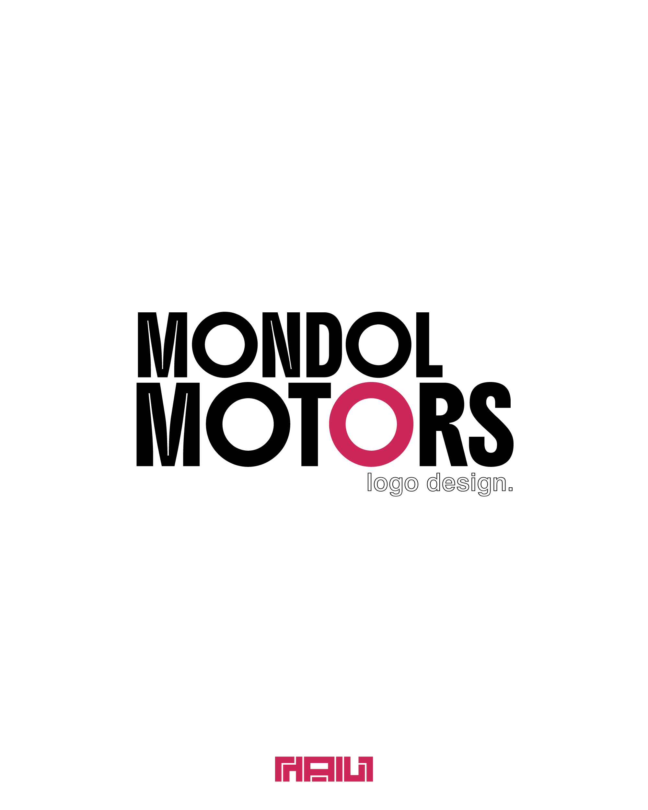
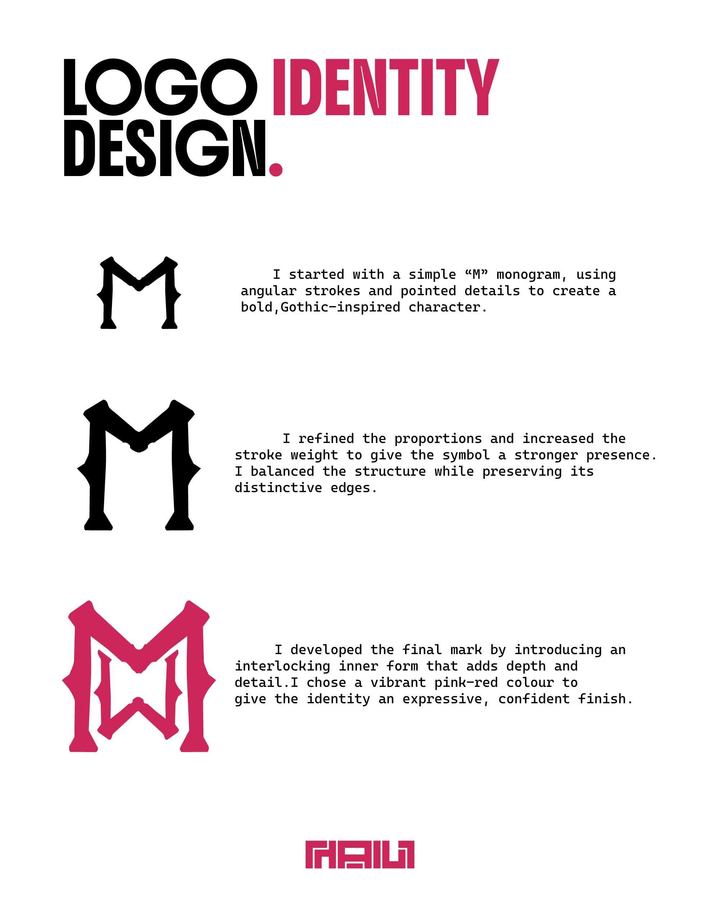
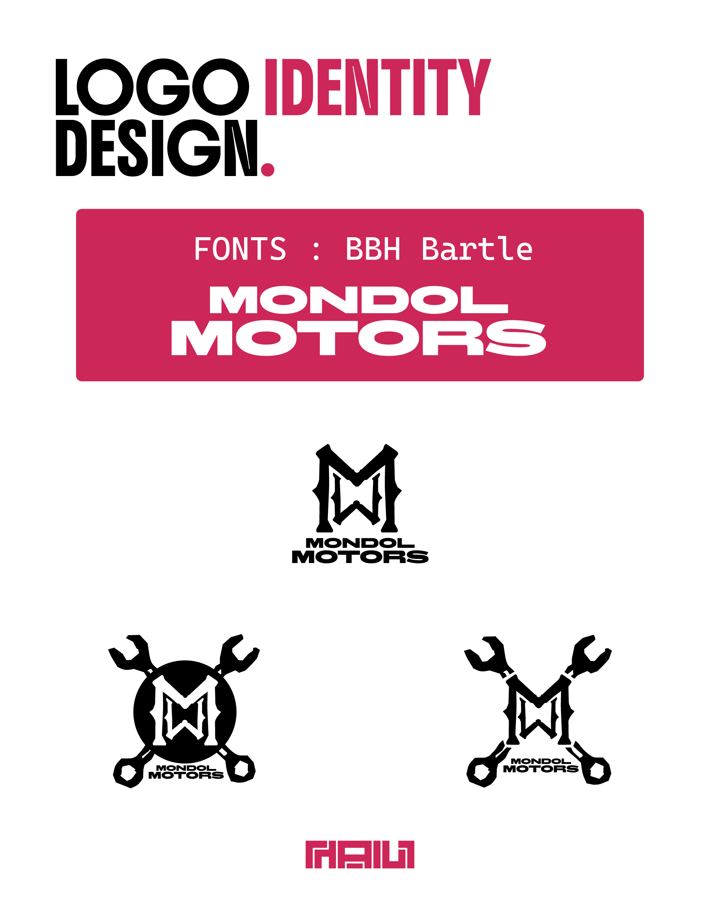
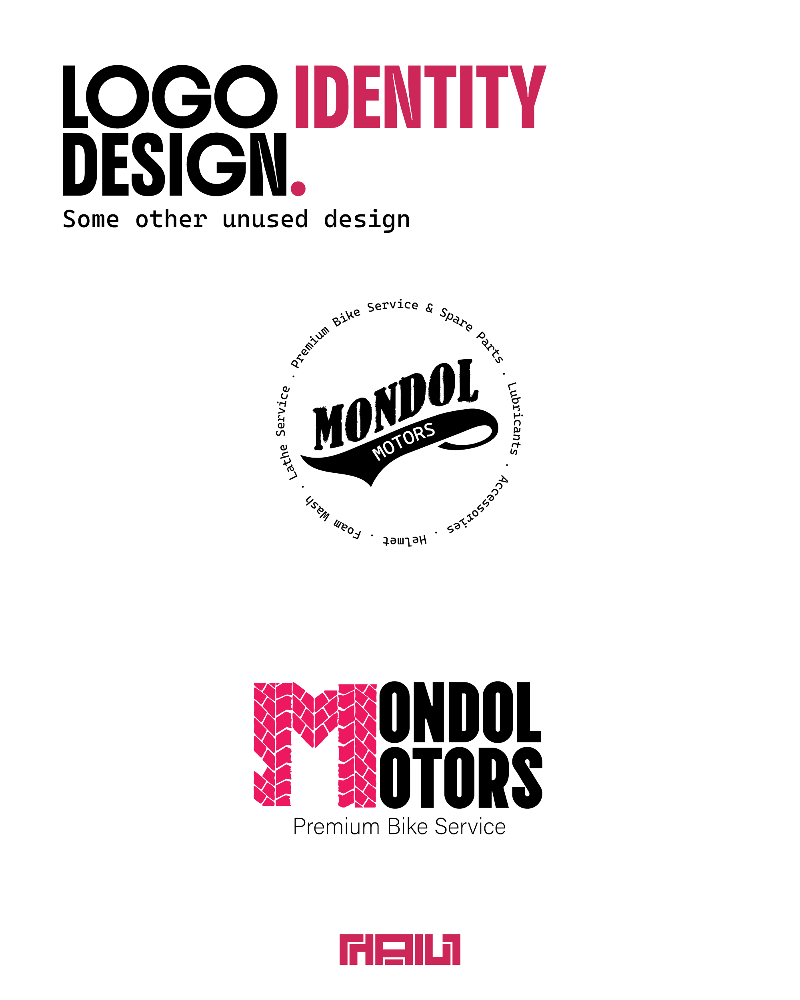

Automotive identity · Logo system
Mondol Motors
A client logo project for Mondol Motors, an automobile service shop.

About the project
From idea to identity.
Mondol Motors was a client project in which I designed a logo for an automobile service shop. The work focused on giving the business a clear, recognisable visual identity.
The mark uses sharp, symmetrical strokes to form a strong M-based emblem. Its compact silhouette pairs with a heavy wordmark, creating a visual identity that reads clearly as both a standalone symbol and a full logo lockup.
The identity sheets explore the emblem in black and crimson, along with stacked and circular wordmark arrangements. A typography study identifies BB Bartle, and the variations demonstrate how the same core shapes can support several logo formats.
- Angular M-based emblem
- Black and crimson logo variations
- Stacked and circular wordmark lockups
Process & applications
The full presentation.



